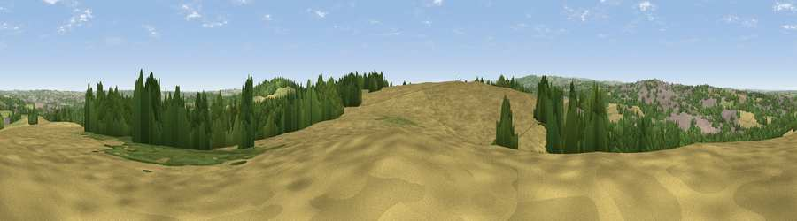

Viewpoint near Elsecar
#19071 in England · top 27% of its area beats it · near ElsecarThe view, rendered

A 360° render of this exact spot computed from the terrain model, tree cover and land cover — summer colours, afternoon light, calibrated against photographs of famous viewpoints. Real trees, hedges and buildings will differ in detail.
The panorama
Grey silhouette: terrain skyline in each direction (720 bearings, Earth curvature and refraction included). Dashed green: skyline with trees (+15 m) and buildings (+8 m) as obstacles. Blue strip: how far the ground is visible on each bearing.
Where the view opens
Wedge length = distance to the farthest visible ground on that bearing (vegetation-aware). Rings at 10, 25 and 50 km.
What fills the view
40% cropland · 28% woodland · 20% grassland · 11% built-up
Angular shares of the visible panorama (visual magnitude), not map area. Landscape diversity 0.56 (0–1 Shannon).
Key numbers
More beautiful places nearby
The staircase of upgrades: each row has a higher view potential than everything closer. Driving times are estimates from straight-line distance, calibrated against real road routing — check an actual route before setting out.
| Place | Direction | Drive | Score |
|---|---|---|---|
| Viewpoint near Wentworth | SW · 0 km | ~2 min | 61.2 |
| Hoober Stand | SE · 2 km | ~4 min | 64.2 |
| Hoyland Lowe | WNW · 3 km | ~8 min | 68.7 |
| Viewpoint near Whitley | WSW · 8 km | ~16 min | 72.1 |
| Viewpoint near Wharncliffe Side | WSW · 9 km | ~17 min | 75.2 |
| Viewpoint near Greenfield | W · 39 km | ~58 min | 76.0 |
| Viewpoint near Carrbrook | W · 40 km | ~60 min | 77.1 |
| Viewpoint near Otley | NNW · 49 km | ~70 min | 77.5 |
53.49051, -1.40651 · source: screening · position refined by local search. Computed location — check access rights before visiting.